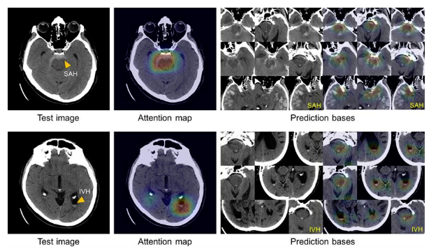

Programming Languages:
Java, Python, C, HTML, CSS, JavaScript
Dartmouth CS Courses:
Object Oriented Programming (CS10)
Discrete Mathematics (CS30)
Software Design and Implementation (CS50)
Artificial Intelligence (CS76)
Linear Algebra (MATH22)
Past Experiences:
Laboratory of Medical Imaging and Computation (Jun 2018 - Sep 2018)
Machine Learning Intern
Used python to program and co-publish a brain hemorrhage identification application which is used by medical professionals at Massachusetts General Hospital.
This application uses machine learning to detect the probability of a brain hemorrhage in any CT image uploaded.
Can't share the github repo nor the application because the lab and hospital doesn't allow it.
Below is an example of the application.

KTByte Computer Science Academy (Jun 2020 - present)
Instructor
Teach classes of around 10 students in Java on programming basics such as recursion, arrays, hashtables, loops, etc.
Alliance for Sustainable Communities (Sep 2020 - present)
Software Engineer Intern
Just started working as a SWE for this non-profit.
Using an application called plone to develop their communications and management platform.